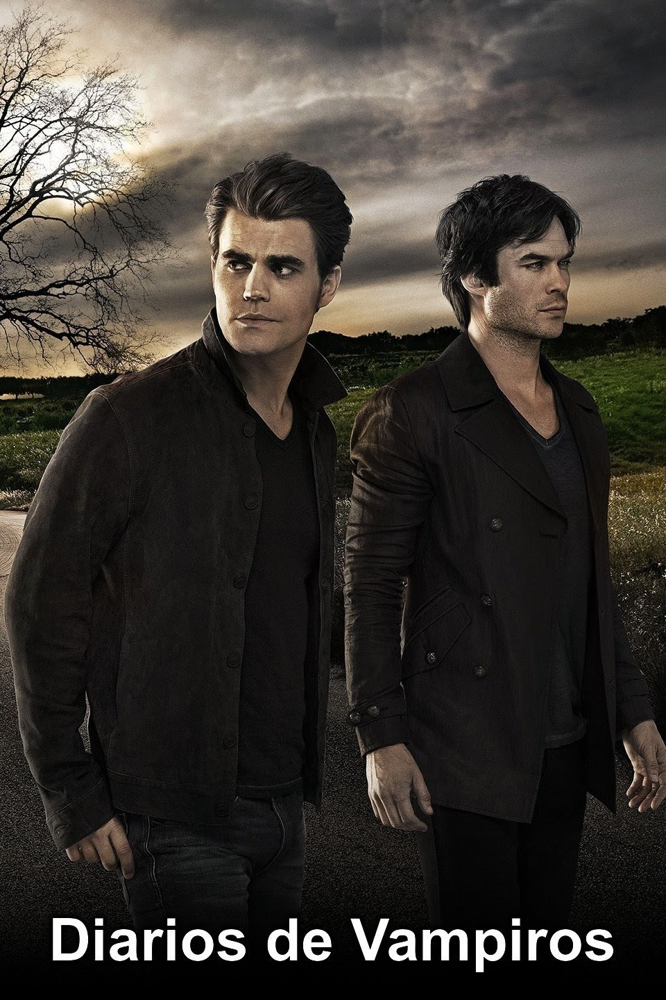

Riverdale es una serie de televisión estadounidense de drama y misterio creada por Roberto Aguirre-Sacasa y basada en los personajes de Archie Comics. Se estrenó el 26 de enero de 2017 por The CW. En Latinoamérica fue estrenada el 26 de abril de 2017 en Warner Channel. La vida tranquila y convencional de los estudiantes de Riverdale da un giro cuando el alumno más popular del instituto aparece asesinado. "Riverdale" es una serie juvenil con toques de thriller, basada en los míticos personajes de los cómics de '"Archie", creados en el año 1968, pero con un giro más oscuro y nada inocente. Los cómics ya tuvieron una adaptación televisiva en dibujos animados, "Archie y sus amigos". Los personajes forman parte del imaginario colectivo de una generación y dieron lugar a numerosas entregas basadas en los personajes de Archie, Betty, Reggie, Jughead y Veronica. El estreno de la serie coincide con el 75º aniversario del nacimiento de los cómics.
The Vampire Diaries (Crónicas Vampíricas en España y El Diario de los Vampiros o Diarios de Vampiros en Latinoamérica) es una serie de televisión estadounidense de género dramático, creada por Kevin Williamson y basada en la saga de L. J. Smith. La trama gira en torno a la vida de Elena, sus amigos y otros habitantes de una pequeña ciudad de Virginia, llamada Mystic Falls. Elena Gilbert (Nina Dobrev), es una adolescente de la cual se enamoran dos hermanos vampiros, Stefan (Paul Wesley), y su hermano Damon Salvatore (Ian Somerhalder). Elena es idéntica a Katherine, la mujer que los convirtió en vampiros y que jugó con el amor que ambos sentían por ella. The Vampire Diaries fue estrenada en el canal The CW el 10 de septiembre de 2009, y el final de temporada fue emitido el 13 de mayo de 2010. El 11 de enero de 2015, la serie fue renovada para una séptima temporada, que fue estrenada el 8 de octubre de 2015. La serie fue renovada para una octava y última temporada el 11 de marzo de 2016, la cual finalizó el 10 de marzo de 2017 con el episodio I Was Feeling Epic. Puedes ver esta serie en Netflix o en la plataforma de streaming the CW. También cuenta con 2 spin-off los cuales fueron llamados "THE ORIGINALS" y "LEGACIES".
'The Originals' es un spin off de 'Crónicas Vampíricas', exitosa serie basada en las novelas homónimas de la escritora L.J. Smith. Está centrada en los vampiros originales y tiene como principal protagonista a Klaus Mikaelson (Joseph Morgan, 'Crónicas vampíricas', 'Immortals'). La historia comienza cuando Klaus tiene que irse de Mystic Falls para volver al barrio francés de Nueva Orleans, crisol sobrenatural, que él ayudó a construir siglos atrás. Es allí donde se reúne con su antiguo y diabólico pupilo Marcel. Además, de enterarse de que hay algunas personas que se están movilizando en su contra por lo que Marcel decide averiguar quiénes son y cuáles son los motivos que les llevan a revelarse contra él. La serie cuenta con dos brujas como personajes nuevos y con Cami, una estudiante de psicología enamorada del estudio del comportamiento humano, decidida a averiguar cuáles son los motivos que convierten a una persona en un ser malvado.

Jane the Virgin es una serie de televisión estadounidense transmitida por The CW. Se estrenó el 13 de octubre de 2014. La serie es una adaptación de la telenovela venezolana Juana, la virgen creada por Perla Farías. La serie es protagonizada por Gina Rodriguez como Jane Villanueva, una joven latina, trabajadora y religiosa, que queda embarazada después de ser artificialmente inseminada por error. Situada en Miami, en la serie se detallan los sorprendentes e imprevistos acontecimientos que se producen en la vida de Jane Villanueva, una joven latina de ascendencia venezolana, trabajadora y religiosa. Jane le prometió a su abuela que conservaría su virginidad hasta el matrimonio. Está comprometida con Michael, un detective de la policía de Miami, pero todo se complica cuando una médica la insemina artificialmente por error durante un chequeo. Para empeorar las cosas, el donante biológico es un hombre casado, antiguo playboy, superviviente de cáncer, propietario del hotel donde trabaja Jane.
Arrow. Es una serie de televisión estadounidense de género dramático creada por David Nutter, basada en la historia del superhéroe de DC Comics, Flecha Verde, y protagonizada por Stephen Amell, Katie Cassidy y Colin Donnell, la cual fue estrenada el 10 de octubre de 2012. En Latinoamérica, la serie fue estrenada el 22 de octubre por Warner Channel. Adaptación libre de un personaje de DC Comics, playboy de día, que, durante la noche, usa su arco y sus flechas contra el crimen. Tras haber desaparecido y haber sido dado por muerto en un violento naufragio, el multimillonario playboy Oliver Queen es rescatado con vida cinco años después en una isla del Pacífico. Una vez en casa, su madre, su hermana y su mejor amigo notan que la terrible experiencia sufrida lo ha cambiado profundamente. Él, por su parte, trata de ocultar la verdad sobre sí mismo, pero se propone enmendar los errores que cometió en el pasado. Con la ayuda de su fiel chófer y guardaespaldas, vuelve a su antigua vida de mujeriego despreocupado, pero, en secreto, crea el personaje de un justiciero encapuchado que lucha contra el mal.
La serie describe las hazañas de los hermanos Sam y Dean Winchester, interpretados por los actores Jared Padalecki y Jensen Ackles respectivamente, quienes viajan a diversos sitios de Estados Unidos, a bordo de un Chevrolet Impala de color negro y modelo 1967, investigando y combatiendo sucesos paranormales e inexplicables, muchos de ellos basados en leyendas urbanas de la cultura estadounidense, además de criaturas sobrenaturales clásicas, tales como vampiros, licántropos y fantasmas. A lo largo de las siguientes temporadas, la trama se ha diversificado, a consecuencia principalmente del desarrollo de los protagonistas y su relación con eventos como el Apocalipsis.
Este es un Un reboot modernizado de la telenovela de los años 80, "Dinastía". Sigue a dos de las familias más ricas de Estados Unidos mientras luchan por controlar su fortuna y sus hijos. La trama de la serie se ubica en Atlanta y cuenta la historia de la gran empresa Carrington Atlantic y su familia capitaneada por Blake Carrington. Todo el embrollo ocurre cuando uno de los trabajadores de Carrington Atlantic, Thomas Matthew Blaisel, mantiene una relación amorosa a espaldas de su depresiva mujer Claudia. La amante de Blaisel es Cristal Flores, también trabajadora de la misma empresa. Todo se mantiene en secreto hasta que Blaisel, descubre que Cristal se va a casar con el jefe de jefes, Blake Carrington.

La próxima leyenda de la moda Katy Keene, la cantante y compositora Josie McCoy, el interprete Jorge Lopez/Ginger y la "It Girl" Pepper Smith, persiguen juntos sus sueños de veintitantos años en la ciudad de Nueva York.Katy diseña ropa para quien sea que pueda, incluyendo a su amiga y compañera de cuarto Josie, quien su talento para la música llama la atención de Alexander Cabot, un CEO que espera relanzar la división discográfica del imperio corporativo de su padre. Pero el sueño de Alexander de tener la firma de Josie para un contrato de grabación se encuentra con la interrupción de la poderosa vicepresidente de Cabot Media, Alexandra, quien también es su hermana gemela. El compañero de cuarto de Josie y Katy, Jorge Lopez trabaja en la bodega de su familia y tiene sus ojos en Broadway, pero tras una serie de rechazos, espera poder llevar su carrera de drag como Ginger al siguiente nivel. La misteriosa Pepper Smith planea abrir su propia versión de la fabrica de Andy Warhol, ella tiene las conexiones pero nadie parece saber de donde obtuvo su dinero — o si realmente tiene. Katy se esfuerza para manejar la presión de su trabajo en la tienda de lujo Lacy's y las exigencias de su jefa, Gloria Grandbilt, una compradora profesional legendaria. Pero Katy tiene el apoyo de su novio, Ko Kelly, quien tiene su propio sueño de convertirse en un boxeador profesional. A medida que estos aspirantes a artistas tomen la pasarela, el estudio de grabación, Broadway y la escena social de Nueva York, encontrarán algo más que una carrera en la gran ciudad: encontrarán una amistad duradera.
Reign es una serie dramático-histórica, creada por Laurie McCarthy. La ficción está ambientada en la Francia del año 1557 y se centra en la figura de la Reina Mary Stuart de Escocia, figura de gran relevancia en la historia de la nación. La serie narra cómo se forja el carácter testarudo de la protagonista y la forma en la que se hace con el poder. Todo comienza cuando la joven llega a Francia, con la compañía de cuatro amigos y damas de honor. El viaje, en el que se formalizaba el compromiso de la Reina con el Príncipe Francis, era otra estrategia más de Escocia para afianzar su alianza con el país galo. El Príncipe Francis no termina de estar convencido de contraer matrimonio ya que mantiene una relación con una de las damas de su corte, por lo que la alianza no acaba de estar asegurada. En torno a este 'trío' amoroso existen conspiraciones para sabotear el matrimonio de los jóvenes, poniendo en peligro sus vidas.
En el Upper East Side neoyorquino, el barrio más privilegiado de Manhattan, un grupo de adolescentes de buena familia vive bajo la atenta mirada de Gossip Girl, la reina cotilla, una blogger despiadada que se dedica a extender los rumores y noticias de los chicos sin piedad. El problema, sin embargo, es que son ellos mismos los que los alimentan. Entre ellos se encuentran Blair Waldorf, la reina del colegio, Serena Van DerWoodsen, una rebelde ya reformada, Nate Archibald, el aparentemente chico perfecto que sufre las adicciones de su padre, el despiadado Chuck Bass, habitual de las fiestas, las drogas y la prostitución y.. Dan y Jenny Humphrey, dos chicos de Broadway que han conseguido una beca para estudiar en el prestigioso colegio de sus compañeros.Gossip Girl es un drama adolescente basado en las novelas de título homónimo, que inicialmente fue planteada como una película en la que el guión debía estar a cargo de la creadora de Las Chicas Gilmore y la protagonista debía ser Lindsay Lohan, aunque finalmente aquel proyecto murió y se optó por hacer una serie, que se ha convertido en pocas temporadas en un verdadero fenómeno adolescente. Al hecho de aprovechar la fórmula de otras series como Sexo en Nueva York -gente privilegiada, moda de grandes diseñadores y la cosmopolita ciudad de Nueva York como telón de fondo- se le suma la elección de un reparto que se ha convertido ya en verdaderos iconos para los jóvenes